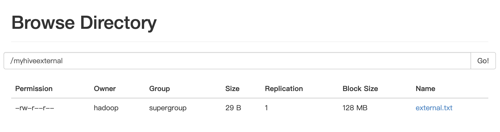
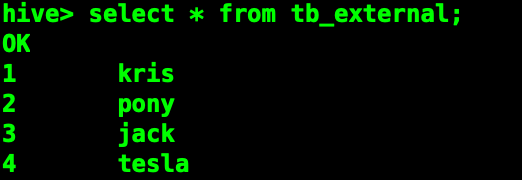
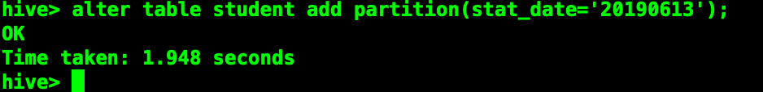
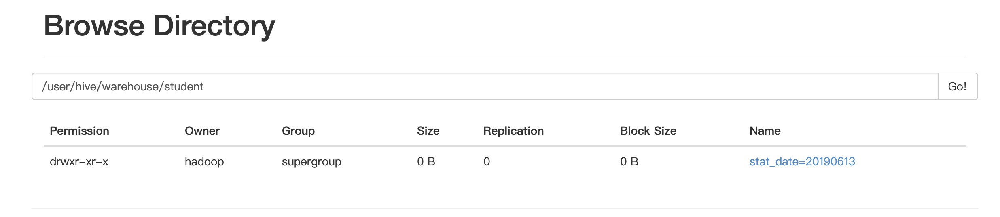
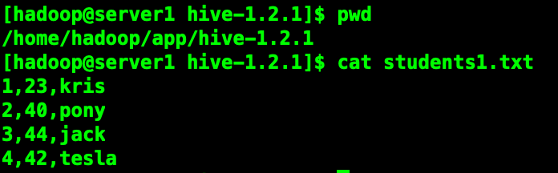
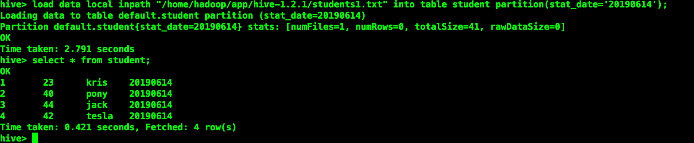
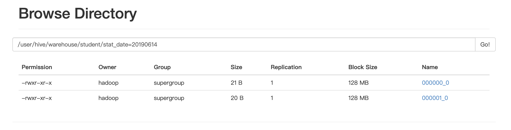
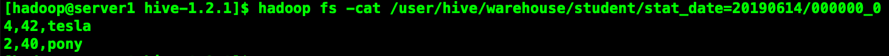

原文连接:https://www.cnblogs.com/xicent/p/11835476.html
在工作中我们经常使用的数据库，数据库一般存放的我们系统中常用的数据，一般为百万级别。如果数据量庞大，达到千万级、亿级又需要对他们进行关联运算，该怎么办呢？
前面我们已经介绍了HDFS和MapReduce了，它俩结合起来能够进行各种运算，可是MapReduce的学习成本太高了，如果有一种工具可以直接使用sql将hdfs中的数据查出来，并自动编写mapreduce进行运算，这就需要使用到我们的hive数据仓库。
Hive基本概念
什么是Hive
Hive是基于Hadoop的一个数据仓库工具，可以将结构化的数据文件映射为一张数据库表，并提供类SQL查询功能。为什么使用Hive
- 直接使用hadoop所面临的问题
人员学习成本太高
项目周期要求太短
MapReduce实现复杂查询逻辑开发难度太大 - 为什么要使用Hive
操作接口采用类SQL语句，提供快速开发的能力。
避免了去写MapReduce，减少开发人员的学习成本。
扩展功能很方便
Hive的特点
- 可扩展
Hive可以自由的扩展集群的规模，一般情况下不需要重启服务。 - 延展性
Hive支持用户自定义函数，用户可以根据自己的需求来实现自己的函数。注意:这里说的函数可不是存储过程噢。 - 容错
良好的容错行，节点出现问题SQL仍可以完成执行
基本组成
用户接口:包括CLI、JDBC/ODBC、WebGUI元数据存储:通常是存储在关系数据库如 mysql,derby中。解释器、编译器、优化器、执行器
各组件的基本功能
- 用户接口主要有三个:CLI、JDBC/ODBC和WebGUI。其中，CLI为shell命令行；JDBC/ODBC是Hive的JAVA实现，与传统数据库JDBC类似;WebGUI是通过浏览器访问Hive
- 元数据存储:Hive将元数据存储在数据库中。Hive中的元数据包括表的名字，表的列和分区及其属性，是否为外部表，表的数据所在的目录等等。
- 解释器、编译器、优化器完成HQL查询语句从此法分析、语法分析、编译、优化以及查询计划的生成。生成的查询计划存储在HDFS中，并且随后使用MapReduce执行。
Hive与Hadoop的关系
sequenceDiagram
客户端->>Hive处理转换成MapReduce: 发送HSQL语句
Hive处理转换成MapReduce->>MapReduce运行: 提交任务到Hadoop
MapReduce运行->>执行结果文件放到HDFS或本地: 执行结果Hive与传统数据库对比
| --- | Hive | RDBMS |
|---|---|---|
| 查询语言 | HQL | SQL |
| 数据存储 | HDFS | Raw Device or Local FS |
| 执行 | MapReduce | Excutor |
| 执行延迟 | 高 | 低 |
| 处理数据规模 | 大 | 小 |
| 索引 | 0.8版本后加入位图索引 | 有复杂的索引 |
==hive中具有sql数据库，用来存储元数据信息(如:表的属性，数据的位置)。hive只适合用来做批量数据统计分析。读多写少==
Hive的数据存储
- Hive中所有的数据都存储在HDFS中，没有专门的数据存储格式(可支持Text,SequenceFile,ParqueFile,RCFile等)
- 只需要在创建表的时候告诉Hive数据中的列分隔符和行分隔符。默认列分隔符为ascii码的控制符\001,行分隔符为换行符。
- Hive中包含以下数据模型:DB、Table、External Table、Partition、Bucket。
db:在hdfs中表现为hive.metastore.warehouse.dir目录下的一个文件夹table:在hdfs中表现为所属db目录下的一个文件夹external table:与table类似，不过其数据存放位置可以在任意指定路径。删除表时只会删除元数据，不会删除实际数据partition:在hdfs中表现为table目录下的子目录bucket: 在hdfs中表现为同一个表目录下根据hash散列之后的多个文件
Hive的安装部署
安装
单机版(内置关系型数据库derby)
元数据库mysql版
这里使用常用的mysql版，使用derby的话不太方便，因为derby会将文件保存在你当前启动的目录。如果下次你换个目录启动，会发现之前保存的数据不见了。元数据库mysql版安装
安装mysql数据库
mysql安装仅供参考，不同版本mysql有各自的安装流程。# 删除原有的mysql
rpm -qa | grep mysql
rpm -e mysql-libs-5.1.66-2.el6_3.i686 --nodeps
rpm -ivh MySQL-server-5.1.73-1.glibc23.i386.rpm
rpm -ivh MySQL-client-5.1.73-1.glibc23.i386.rpm
# 修改mysql的密码，并记得设置允许用户远程连接
/usr/bin/mysql_secure_installation
# 登录mysql
mysql -u root -p
配置hive
配置HIVE_HOME环境变量
vi conf/hive-env.sh
#配置其中的$hadoop_home配置元数据库信息
vi hive-site.xml
#添加如下内容
<configuration>
<!--配置mysql的连接地址-->
<property>
<name>javax.jdo.option.ConnectionURL</name>
<value>jdbc:mysql://localhost:3306/hive?createDatabaseIfNotExist=true</value>
<description>JDBC connect string for a JDBC metastore</description>
</property>
<!--配置mysql的驱动-->
<property>
<name>javax.jdo.option.ConnectionDriverName</name>
<value>com.mysql.jdbc.Driver</value>
<description>Driver class name for a JDBC metastore</description>
</property>
<!--配置登录用户名-->
<property>
<name>javax.jdo.option.ConnectionUserName</name>
<value>root</value>
<description>username to use against metastore database</description>
</property>
<!--配置登录密码-->
<property>
<name>javax.jdo.option.ConnectionPassword</name>
<value>root</value>
<description>password to use against metastore database</description>
</property>
</configuration>放驱动包
安装hive和mysql完成后，将mysql的连接jar包拷贝到$HIVE_HOME/lib目录下
如果出现没有权限的问题，在mysql授权mysql -uroot -p
#执行下面的语句 *.*:表示所有库下的所有表 %:任何ip地址或主机都可以连接
GRANT ALL PRIVILEGES ON *.* TO 'root'@'%' IDENDIFIED BY 'root' WITH GRANT OPTION;
FLUSH PRIVILEGES;Jline包版本不一致问题
到这一步其实已经安装好了，但是由于hadoop中的jline包版本和我们安装hive的jline包版本不一致，会导致hql无法被执行。
因此我们还要把hive的lib目录中的jline.2.12.jar替换掉$HADOOP_HOME/share/hadoop/yarn/lib/jline.0.9.94.jar启动hive
bin/hive登录hive
1.bin/hive
2.bin/beeline
!connect jdbc:hive2://server1:10000
3.bin/beeline -u jdbc:hive2://server1:10000 -n hadoop创建表
创建外部表
create table tb_external(id int,name string) row format delimited fields terminated by',' location 'hdfs://kris/myhiveexternal';在hdfs中已在对应路径存在文件

现在试试直接查询

==为了保证数据的安全，我们一般把源数据表设置为外部表。数据只能通过外部加载导入==
创建带桶的表
hive> create table student(id INT,age INT,name STRING)
> partitioned by(stat_date STRING)
> clustered by(id) sorted by(age) into 2 buckets
> row format delimited fields terminated by ',';修改表
增加分区
alter table student add partition(stat_date='20190613') partition(stat_date='20190614');
alter table student add partition(stat_date='20190615') location '/user/hive/warehouse/student';删除分区
alter table student drop partition(stat_date='20190613');创建的分区会在hdfs对应的路径上创建文件夹


==如果增加的分区带了路径，那么不会在hdfs的路径上显示对应的文件夹==
显示表分区
show partitions student;重命名表
alter table student rename to students;增加列
alter table students add columns(name1 string);==增加的列会在所有列后面，在partition列前面==
替换所有列
alter table students replace columns(id int,age int,name string);显示命令
#查看表
show tables
#查看数据库
show databases
#查看分区
show partitions table_name
#查看方法
show functions
#显示表详细信息
desc extended table_name
#格式话表信息
desc formatted table_name加载数据
使用load data操作 hive会将文件复制到表对应的hdfs文件夹下
加载本地数据
load data local inpath "students1.txt" [overwrite] into table students partition(stat_date="20190614");加上overwrite会讲原有对应分区的数据清除。
如果目标表(分区)已经有一个文件，并且文件名和filepath中的文件名冲突，那么现有的文件会被新文件所替代。


导出数据
保存select查询结果的几种方式：
1、将查询结果保存到一张新的hive表中
create table t_tmp
as
select * from t_p;2、将查询结果保存到一张已经存在的hive表中
insert into table t_tmp
select * from t_p;3、将查询结果保存到指定的文件目录（可以是本地，也可以是hdfs）
insert overwrite local directory '/home/hadoop/test'
select * from t_p;
insert overwrite directory '/aaa/test'
select * from t_p;分桶示例
插入分桶表的数据需要是已经分好桶的，创建分桶的表并不会自动帮我们进行分桶。
#设置变量,设置分桶为true, 设置reduce数量是分桶的数量个数
set mapreduce.job.reduces=2;
# 或者选择以下方式
set hive.enforce.bucketing = true;
# 向分桶表中插入数据
insert into student partition(stat_date='20190614')
select id,age,name from tmp_stu where stat_date='20190614' cluster by(id);
可见在hdfs上根据id分成了两个桶

让我们看看其中一个桶的内容

注意:
==1.order by 会对输入做全局排序，因此只有一个reducer，会导致当输入规模较大时，需要较长的计算时间。==
==2.sort by不是全局排序，它是在数据进去reduce task时有序。因此，如果用sort by进行排序，并且设置mapreduce.job.reduces>1,则sort by只保证每个reduce task的输出有序，不保证全局有序。==
==3.distribute by根据distribute by指定的内容将数据分到同一个reducer==
==4.cluster by除了具有distribute by的功能外，还会对该字段进行排序。因此我们可以这么认为cluster by=distribute by + sort by==
==但是cluster by只能指定同一字段，当我们要对某一字段进行分桶，又要对另一字段进行排序时，用distribute by + sort by更加灵活。==
==分桶表的作用:最大的作用是用来提高join操作的效率;==
思考:select a.id,a.name,b.addr from a join b on a.id=b.id;
如果a表和b表已经是分桶表，而且分桶的字段是id字段。做这个join操作时，还需要全表做笛卡尔积吗？(文末给出答案)
分桶原理
数据分桶的原理:
跟MR中的HashPartitioner的原理一模一样
MR中：按照key的hash值去模除以reductTask的个数
Hive中：按照分桶字段的hash值去模除以分桶的个数
Hive也是 针对某一列进行桶的组织。Hive采用对列值哈希，然后除以桶的个数求余的方式决定该条记录存放在哪个桶当中。数据分桶的作用
好处：
1、方便抽样
2、提高join查询效率如何将数据插入分桶表
将数据导入分桶表主要通过以下步骤
第一步：
从hdfs或本地磁盘中load数据，导入中间表(也就是上文用到的tmp_stu)第二步：
通过从中间表查询的方式的完成数据导入
分桶的实质就是对 分桶的字段做了hash 然后存放到对应文件中，所以说如果原有数据没有按key hash ,需要在插入分桶的时候hash, 也就是说向分桶表中插入数据的时候必然要执行一次MAPREDUCE,这也就是分桶表的数据基本只能通过从结果集查询插入的方式进行导入==我们需要确保reduce 的数量与表中的bucket 数量一致，为此有两种做法==
1.让hive强制分桶，自动按照分桶表的bucket 进行分桶。(推荐)
set hive.enforce.bucketing = true;
2.手动指定reduce数量
set mapreduce.job.reduces = num;
/
set mapreduce.reduce.tasks = num;
并在 SELECT 后增加CLUSTER BY 语句
觉得不错记得给我点赞加关注喔～
公众号:喜讯XiCent